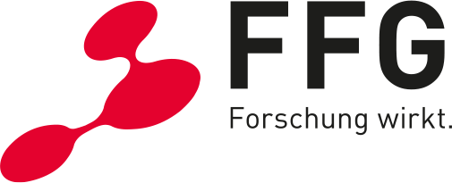

<div class="banner">
  <div class="banner-table flex-column">
    <div class="flex-row">
      <div class="flex-item flex-column">
        <h2><a href="https://www.ait.ac.at/en/imprint">Imprint</a></h2>
        <p class="text add-bottom-margin-large">
            
            
            
            <br />
    The project PREPARED is funded by the Austrian security research programme KIRAS of the Federal Ministry of Finance (BMF).
    <!-- Add logos -->
        </p>
        <p class="text" style="font-size:70%">
          Theme based on <a href="https://github.com/yenchiah/project-website-template">yenchiah</a>.
        </p>
      </div>
    </div>
  </div>
</div>
